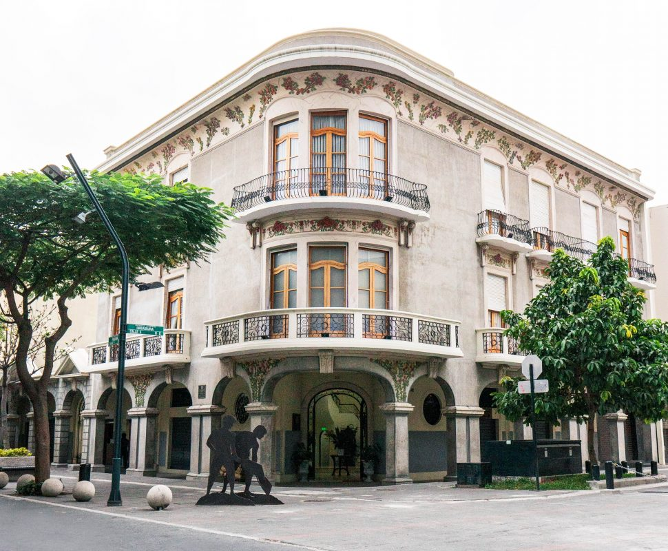
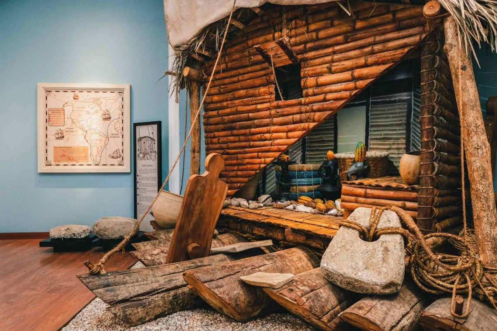
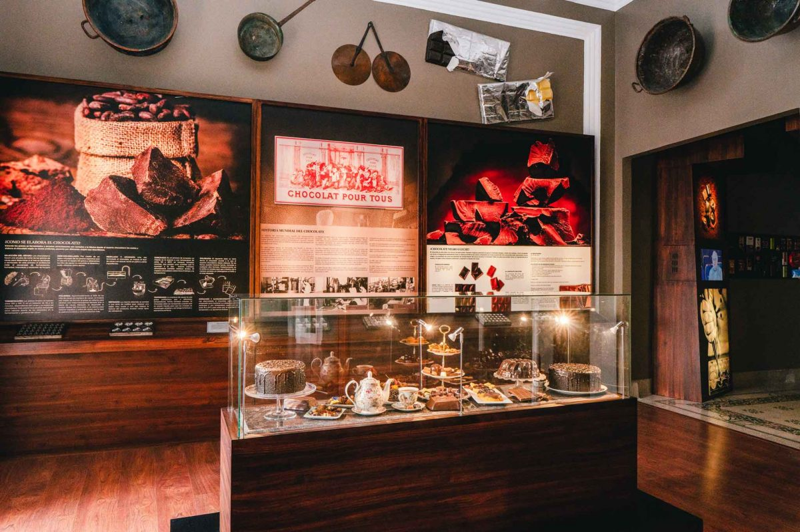

¿Qué es el Museo del Cacao?
El Museo Nacional del Cacao es un espacio cultural ubicado en Guayaquil que permite conocer la historia del cacao ecuatoriano y su importancia para la ciudad.

El Museo Nacional del Cacao es un espacio cultural ubicado en Guayaquil que permite conocer la historia del cacao ecuatoriano y su importancia para la ciudad.

El cacao ha tenido un papel importante en la historia de Guayaquil, especialmente por su producción, comercialización y exportación.

El cacao forma parte de la historia y del patrimonio del Ecuador. Su desarrollo también estuvo relacionado con el crecimiento económico y social de Guayaquil.

En el museo se pueden encontrar salas de exposición, piezas, recreaciones históricas y recursos que permiten conocer el proceso del cacao y su transformación.



El Museo Nacional del Cacao se encuentra en las calles Panamá e Imbabura, en el centro de Guayaquil.